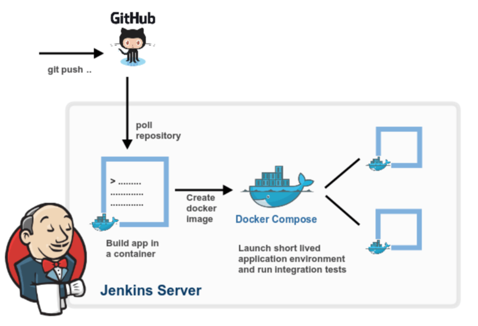

Welcome to the world of Jenkins, Kubernetes and Docker!
There is plenty to explore here...
You should be both patient and curious at same time :)
Automatisation is the Key!
Teacher, this is 100% working example :)